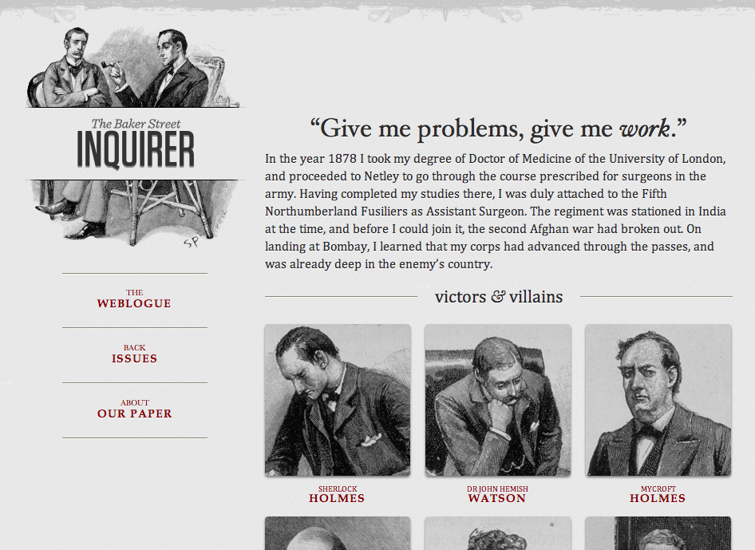

Responsive
Modern Web Interfaces
by Eric Bollens
Responsive Design
The Web is Flexible
The control which designers know in the print medium... is simply a function of the limitation of the printed page.
We should embrace the fact that the web doesn't have the same constraints, and design for this flexibility.
~ John Allsopp, A Dao of Web Design
Why Do We Care?
First there was desktop...
then there was mobile...
and now watches, widescreens, etc.
Each device has different dimensions and capabilities
Fully-capable browsers have become pervasive
Changing perceptions regarding how mobile is used
Responsive Layouts
 |
 |  |
Flexible Grid
target ÷ context = result
|
|
Breaking the Flexible Grid
Still has limits
Small screen
constricts content
Large screen
isolates content
Media Queries
|
|
Flexible Media
Images and video have explicit pixel sizes
 |
 |
img { max-width: 100%; }img, embed, object, video { max-width: 100%; }Responsive Images
Art Direction Use Case
<picture>
<img src="small.jpg" alt="Example">
<source media="(min-width: 45em)" srcset="large.jpg">
<source media="(min-width: 32em)" srcset="med.jpg">
</picture> Variable Sized Use Case
<img src="ex-400.jpg" alt="Example"
srcset="ex-200.jpg 200w,
ex-400.jpg 400w,
ex-800.jpg 800w,
ex-1600.jpg 1600w"
sizes="(max-width: 30em) 100vw,
(max-width: 50em) 50vw,
calc(33vw - 100px)">Viewport Tag
Mobile browsers assume desktop pages
but the viewport tag lets us specify otherwise
<meta name="viewport" content="width=device-width,initial-scale=1">Putting It Together
Flexible Grid
Proportional design with percentages, not pixels
Media Queries
Application of styles at particular dimensions
Responsive Media
Images and video that scale to fit their container
Viewport Definition
Specify dimensions for the viewport
Responsive Beyond Layouts
Back to the definition of responsive
Website transforms to fit the user's
needs and capabilities
Up to this point, a focus on the viewport
But many other factors to consider
Context
Network
Resolution
Battery
Light
@media
CSS Media Queries Level 3
@media (max-width: 480px) { /* ... */ }
@media (min-width: 481px) { /* ... */ }
@media (max-resolution: 299dpi) { /* ... */ }
@media (min-resolution: 300dpi) { /* ... */ }
@media (max-height: 800p1px) { /* ... */ }
@media (min-height: 800px) { /* ... */ }
@media (max-aspect-ratio: 1/1) { /* ... */ }
@media (orientation: portrait) { /* ... */ }
@media (min-aspect-ratio: 1/1) { /* ... */ }
@media (orientation: landscape) { /* ... */ }CSS Media Queries Level 4
@media (light-level: normal) { /* ... */ }
@media (light-level: dim) { /* ... */ }
@media (light-level: washed) { /* ... */ }
@media (pointer: fine) { /* ... */ }
@media (hover: hover) { /* ... */ }
@media (scripting: enabled) { /* ... */ }Javascript APIs
Ambient Light
window.addEventListener('devicelight', function(e) {
/** change environment based on e.value from [0,100] **/
});
Battery
navigator.battery || navigator.webkitBattery || navigator.mozBatteryNetwork Performance
window.performance.navigation
window.performance.getEntriesByType("resource")[5]Quota Management API
navigator.storageQuota.queryInfo("temporary").then(function(storageInfo) {
initializeCache(storageInfo.usage, storageInfo.quota - storageInfo.usage);
});@supports
CSS Conditional Rules Module Level 3
@supports (display: flex) {
div { display: flex; }
}@supports (-webkit-box-shadow: 0 0 2px #000) or
( -moz-box-shadow: 0 0 2px #000) or
( box-shadow: 0 0 2px #000) {
div { /* .. */ }
}CSS.supports("display", "flex");CSS.supports("(transform-origin: 5% 5%)");CSS.supports("(transform-origin: 5% 5%) and (display:flex)");Available in Chrome 28, Firefox 17 and Opera 12.1
and polyfill github.com/kjarmicki/fq-polyfill
Responsive Interactions
How Do You Scroll?
Spin a scroll wheel
Drag a scroll bar
Press a scroll arrow
Slide a finger across the screen
Verbally state "scroll" and a direction
How Do You Undo?
CTRL + Z
CMD + Z
Press down and select action
Shake or swipe
Handling for Many Environments
document.addEventListener('keydown', function(e){
if(navigator.userAgent.match(/Macintosh/g) && e.which === 90 && e.metaKey)
doUndo();
else if(e.which === 90 && e.ctrlKey)
doUndo();
});if(navigator.userAgent.match(/(iPad|iPhone|iPod)/g))
window.addEventListener('shake', function(e){
doUndo();
});(function (window, document) {
function Shake() {
this.hasDeviceMotion = 'ondevicemotion' in window;
this.threshold = 15;
this.lastTime = new Date();
this.lastX = null;
this.lastY = null;
this.lastZ = null;
if (typeof document.CustomEvent === "function") {
this.event = new document.CustomEvent('shake', {
bubbles: true,
cancelable: true
});
} else if (typeof document.createEvent === "function") {
this.event = document.createEvent('Event');
this.event.initEvent('shake', true, true);
} else {
return false;
}
}
Shake.prototype.reset = function () {
this.lastTime = new Date();
this.lastX = null;
this.lastY = null;
this.lastZ = null;
};
Shake.prototype.start = function () {
this.reset();
if (this.hasDeviceMotion) { window.addEventListener('devicemotion', this, false); }
};
Shake.prototype.stop = function () {
if (this.hasDeviceMotion) { window.removeEventListener('devicemotion', this, false); }
this.reset();
};
Shake.prototype.devicemotion = function (e) {
var current = e.accelerationIncludingGravity,
currentTime,
timeDifference,
deltaX = 0,
deltaY = 0,
deltaZ = 0;
if ((this.lastX === null) && (this.lastY === null) && (this.lastZ === null)) {
this.lastX = current.x;
this.lastY = current.y;
this.lastZ = current.z;
return;
}
deltaX = Math.abs(this.lastX - current.x);
deltaY = Math.abs(this.lastY - current.y);
deltaZ = Math.abs(this.lastZ - current.z);
if (((deltaX > this.threshold) && (deltaY > this.threshold)) || ((deltaX > this.threshold) && (deltaZ > this.threshold)) || ((deltaY > this.threshold) && (deltaZ > this.threshold))) {
//calculate time in milliseconds since last shake registered
currentTime = new Date();
timeDifference = currentTime.getTime() - this.lastTime.getTime();
if (timeDifference > 1000) {
window.dispatchEvent(this.event);
this.lastTime = new Date();
}
}
this.lastX = current.x;
this.lastY = current.y;
this.lastZ = current.z;
};
Shake.prototype.handleEvent = function (e) {
if (typeof (this[e.type]) === 'function') {
return this[e.type](e);
}
};
var myShakeEvent = new Shake();
myShakeEvent && myShakeEvent.start();
}(window, document));And how about tap highlight undo?
IndieUI
Make it easier for web developers to author consistently usable interfaces that are input-agnostic and independent of a user's particular platform, hardware, locale, and preferences.
Enable every type of control in these interfaces to be programmatically determinable and controllable by both mainstream and alternate forms of user input, including assistive technologies.
Provide a clear path for web developers to smoothly transition from currently existing physical events to IndieUI events, during the period when implementations of IndieUI are incomplete.
UndoRequest
element.addEventListener('undorequest', function(){
doUndo();
});
No keypress detection
No UA sniffing or OS consideration
No complex hacks to detect interaction
No undetectable actions
The Twist
Unfortunately, IndieUI is not really supported yet
For now, just be congnizant of the variety...
Not everyone has hover state
Not everyone interacts with keypresses
Mouse events and touch events are different
Interoperable Vocabulary
Why?
Not everyone interacts with our site the same way
Assistive Technologies
Computer Comprehension
These are needs to which we should be responsive
Content Accessibility
For more than a decade, HTML has supported...
alt attributes
label tags
tabindex attribute
h1-6 tags
Also good practices like captioning and skip navs
However, these are not enough for modern applications
Comprehensibility
<div class='container'>
<div class='header'>
<!-- .. -->
</div>
<div class='content-container'>
<div class='left-bar'>
<div class='search'>
<!-- .. -->
</div>
<div class='menu'>
<!-- .. -->
</div>
</div>
<div class='main'>
<!-- .. -->And this is a "sensical" markup
What about absolute positioning, interactive components, etc.?
HTML 5 and ARIA
|
|
New HTML 5 Elements
Landmarks
header, footer, main, nav
Sections
header, footer, main, nav, article, aside, section
Widgets
figure + figcaption, details + summary, time, progress, audio/video + track
Play by the rules, and you'll be pretty accessible without extra work!
Where HTML 5 Isn't Enough
<nav><ol><!-- site nav --></ol></nav>
<nav><ol>
<li id="a1T"><a href="#a1P">Reading 1</a></li>
<li id="a2T"><a href="#a2P">Reading 2</a></li>
</ol></nav>
<div>
<article id="a1P">
<!-- .. --></article>
<article id="a2P">
<!-- .. --></article>
</div>This doesn't express...
which nav is the site nav
that the nav and articles relate
And this isn't even a bad one!
ARIA
Built to map to OS native accessibility APIs
Roles
Properties
States
Example
<nav role="navigation"><ol>
<!-- site nav -->
</ol></nav>
<nav role="tablist"><ol>
<li id="a1T" role="tab" aria-controls="a1P" aria-selected="true">
<a href="#a1P">Reading 1</a></li>
<li id="a2T" role="tab" aria-controls="a2P">
<a href="#a2P">Reading 2</a></li>
</ol></nav>
<div role="main">
<article id="a1P" role="tabpanel" aria-labelledby="a1T">
<!-- .. --></article>
<article id="a2P" role="tabpanel" aria-labelledby="a2T" aria-hidden="true">
<!-- .. --></article>
</div>Tools of the Trade
Underlying Platform
HTML 5
CSS 3
Javascript
Polyfills
All modern browsers support responsive layouts
Some of us still have to support aging browsers
Other responsive techniques are much less supported
Polyfills enable features in browsers that don't support them
Modernizr (modernizr.com)
Respond.js (github.com/scottjehl/Respond)
Selectivizr (selectivizr.com)
Normalize.css (necolas.github.io/normalize.css)
For more...
github.com/Modernizr/Modernizr/wiki/HTML5-Cross-browser-Polyfills
General-purpose Frameworks
Twitter Bootstrap
getbootstrap.com
Zurb Foundation
foundation.zurb.com
UIKit
http://getuikit.com
PureCSS
purecss.io
WebBlocks 1
ucla.github.io/WebBlocks
Layout-oriented Libraries
Skeleton
getskeleton.com
Responsive Grid System
responsive.gs
Grid Syle Sheets *
gridstylesheets.org
* Not actually CSS but rather a language based on the Cassowary Constraint Solver
My Recommendation?
Use specialized components, not all-in-one frameworks
CSS Precompilers
sass-lang.com / lesscss.org
Component Libraries & Compilers
bower.io
compass-style.org / bourbon.io
gruntjs.com / github.com/WebBlocks/WebBlocks
Keep it simple and focus on your use cases!
The Bleeding Edge
HTML.next
w3.org/wiki/HTML/next
Web Components
webcomponents.org
ECMAScript 6
people.mozilla.org/~jorendorff/es6-draft.html
CSS 4
Media Queries Level 4, Selectors Level 4, Variables, etc.
Take these with a grain (or two) of salt!!!